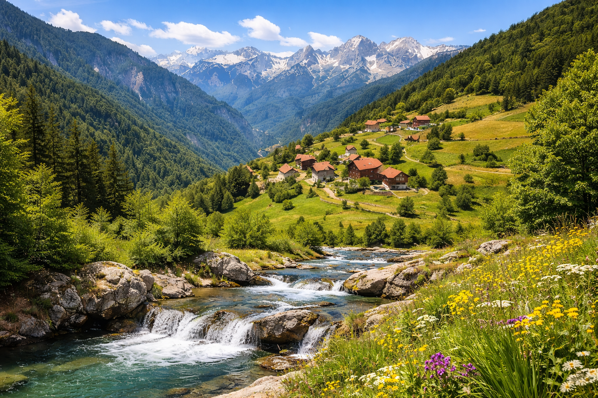
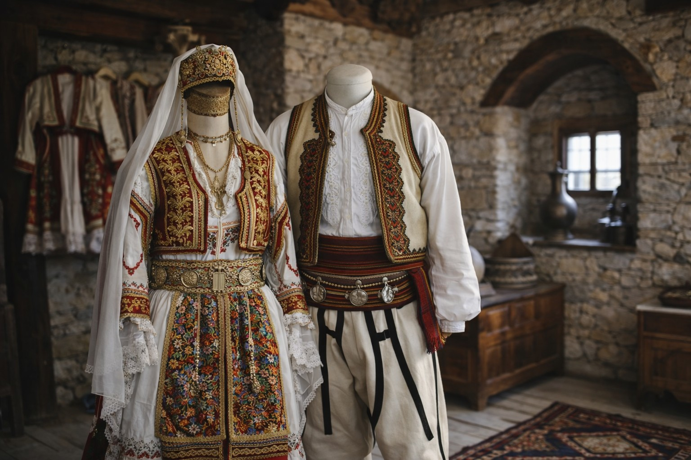
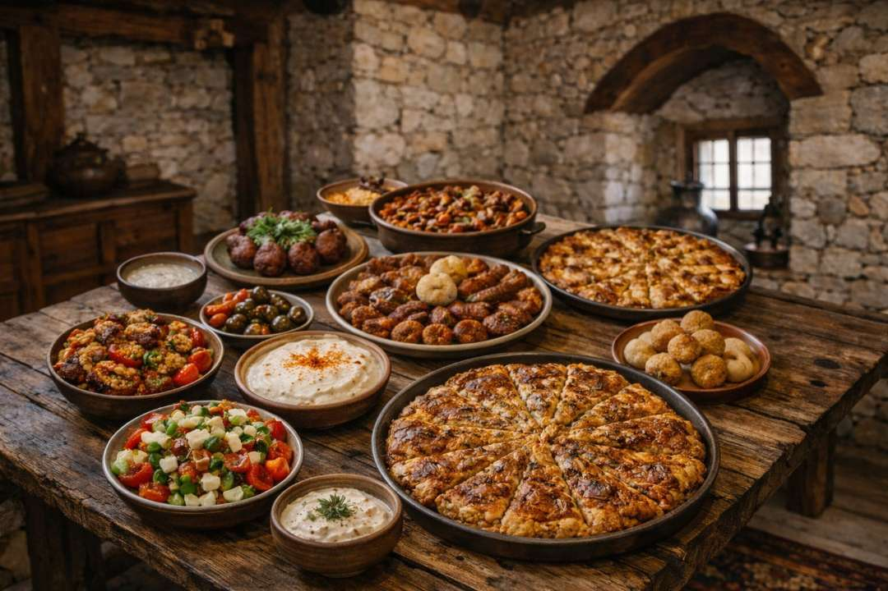
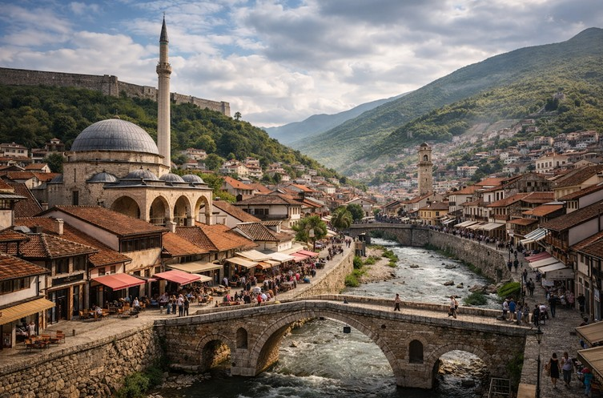

The Wonders of Kosovo

Nature
Kosovo’s nature offers peaceful landscapes where mountains, rivers, and open skies create a deep sense of harmony.

Culture & History
Culture and history in Kosovo reflect centuries of identity, faith, and traditions preserved through generations.

Food & Traditions
Traditional food and customs express warmth, care, and the strong connection between people and their heritage.

Historic Cities
Historic cities reveal layers of architecture, daily life, and stories shaped by time.

Adventure
Kosovo’s landscapes provide space for adventure, reflection, and a close connection with nature.

Welcoming Culture
A culture rooted in kindness and respect, where visitors are welcomed sincerely and treated as part of everyday life.